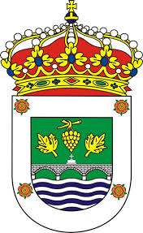

El Rosal es un pueblo que está situado en Galicia en la provincia de Pontevedra.El Rosal tiene 6.249 habitantes.

Lugares para visitar
Pavellón Municipal
Plaza del Calvario
Geografía
Se encuentra a orillas del río Miño, que hace frontera entre España y Portugal, y próximo a su desembocadura. El Rosal también tiene salida al océano Atlántico.